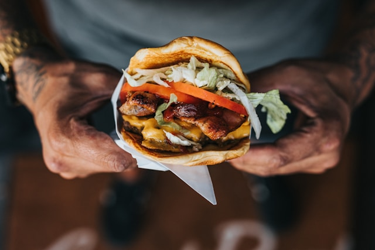

| HOME | MENU | LOCATIONS |
Hello, and welcome to Doug's Burger Shack, the premier destination for all things burger! Born in a one bedroom shack in 1893, Douglas 'Doug' Burgerson has had a culinary passion since the 19th century. Doug grew up hunting in the smoky mountains and lived much of his early life as a sausage maker. When the United States became involved in the First World War, Doug traded his sausages for a uniform and served his country. During this war, he came to know new and innovative dishes that he'd never had in his small mountain town. His favorite of these was the humble Hamburger. Ever since, Doug devoted his life to the pursuit of beefy goodness. He opened his first stand downtown in the big city, each sandwich selling for one nickel apiece. Time flew like an owl, silently and swift. By 1961, Doug had his fill of open-air dining and opened his first brick and mortar restaurant. Fast forward to today, and now there are 5 locations to choose from, all serving the original recipe from 1924. Now delivered through delivery apps near you!
Please visit one of our 5 beautiful locations! Mars location now open!
Now featuring our Burger of the Week!